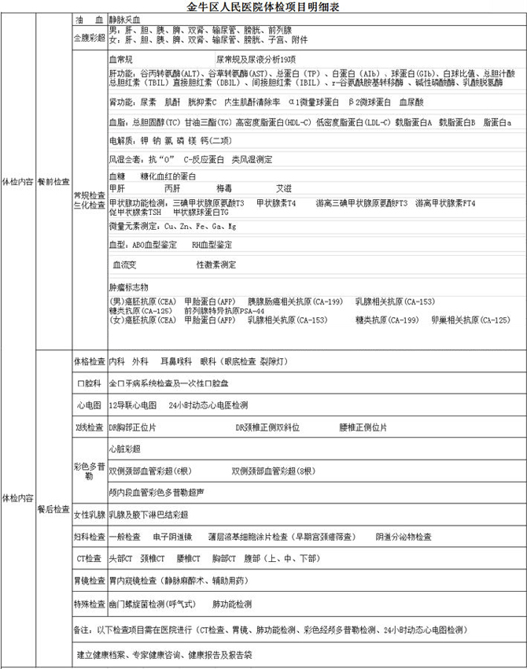

二、114网站预约：www.scgh114.com 【温馨提示】 1、为维持良好的医疗秩序，我院现作出以下规定：凡当日预约挂号就诊序号已过，须按当前就诊序号顺延2位后就诊，请大家自觉遵守。感谢您的的支持与配合。 ２、预约挂号可以提前预约十五天之内的号（例如：本周一可预约下周一，周二可预约到下周二，以此类推）； 3、预约费：2.00元，现场预约时间为7:00-17:30，电话预约挂号时间为8:00—17:30；其他方式的预约挂号时间为全天24小时； 4、预约挂号后，上午的号请您在当日上午9:00以前取号，下午的号请您在当日15:00以前取号。超过时间取号，视为违约，不再为您保留该预约号； 5、预约取号时，请按约定带上“金康卡”或身份证取号; 6、如遇医生因故停诊，我们将安排同专业，同级别的医师代诊； 7、预约挂号后，如您有特殊原因不能就诊，请提前一天通知预约的渠道作废或在上午9:00、下午15:00以前办理退号手续； 8、如果您是初诊病人，您可以在咨询台或大厅了解我院医生出诊情况，根据您的病情选择医生； 9、如果您是复诊病人，别忘了带好您上次就诊时的病历资料，各种检查报告单，以便医生能准确及时地了解您的病情、就诊情况； 10、如果您是为14岁以下的儿童挂号，请您存挂号时告诉挂号员．以便能准确地为您分诊。